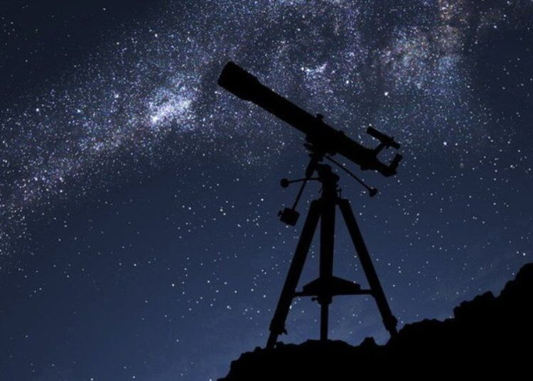

نجوم یعنی چیه ؟

اَختَرشناسی، سِتارهشناسی، نُجوم یا آسترونومی به دانش بررسی موقعیت، تغییرات، حرکت و ویژگیهای فیزیکی و شیمیایی «اشیای آسمانی» از جمله ستارهها، سیارهها، دنبالهدارها، کهکشانها و رویدادهای آسمانی مانند شفق قطبی و تابش زمینهٔ کیهانی گفته میشود که خاستگاه آنها بیرون از جو زمین است.